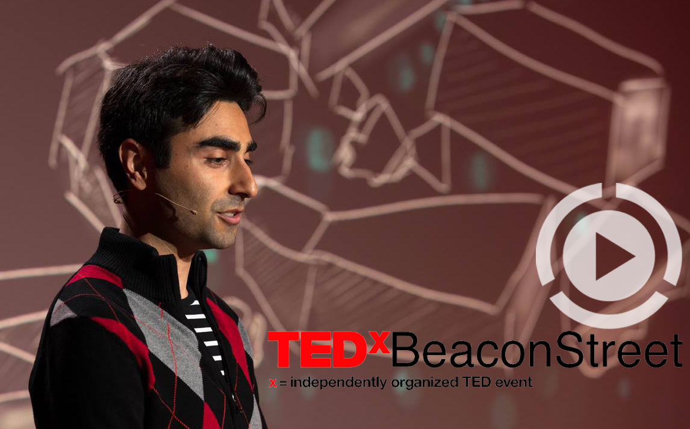
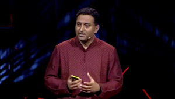

How to See Through Tissue
All Photons Imaging Through Volumetric Scattering
Guy Satat, Barmak Heshmat, Dan Raviv, Ramesh Raskar
** News **
New result demonstrating seeing through layered structures presented in COSI. Paper
We demonstrate a new method that enables us to see deeper and better through tissue with near-infrared wavelengths. Other methods like x-ray and ultrasound provide less information about the type of materials they interact with. In the near-visible part of the electromagnetic spectrum there is a lot of interaction between light and matter. This interaction provides a lot of information (for example, it may allow to distinguish between oxygenated and deoxygenated blood). However, it results in significant scattering, which is why we can't simply see into things as clearly as with x-ray. The main application of our work is in medical imaging. Featured by MIT News. Talk at TEDx Beacon Street. Talk at AutoSens.
Hidden object behind 1.5cm thick tissue phantom is successfully recovered.
The main challenge in imaging through tissue with near infrared wavelengths is optical scattering. Our method, All Photons Imaging (API), uses the entire optical signal in a time resolved measurement and novel signal processing to allow seeing through objects. We demonstrate this by recovering shapes hidden behind 1.5cm thick tissue phantom with 5.9mm spatial resolution. This is a two-fold improvement compared to other time based methods and 4dB improvement in PSNR (peak signal to noise ratio). Our method is all optical, wide field and calibration free. Future applications include medical imaging and non-invasive and remote sensing, for example seeing through fog and evaluating food.
Other methods to overcome scattering in the near-visible range include for example photo-acoustic, and acousto-optic techniques both require complicated coupling between ultrasound and optical hardware, while our method is all optical. Another technique is known as phase-conjugation which uses only coherent photons, and is limited to thin materials, our methods uses all photons and does not depend on coherency. Diffuse optical tomography is another technique, but it's limited to raster scanning of the target which results in long acquisition time, our method doesn't have that limitation and can work in a "single-shot".
Overview:
We use a streak camera for time-resolved measurement of the scene and pulsed laser (Ti:Sapph) for illumination. The measurement provides a dense spatio-temporal profile of the photons that are emitted from the tissue phantom. API uses this spatio-temporal profile to decode (invert) the scattering and recover the target.
How to overcome scattering:
This video explains how time-resolved measurement help to overcome scattering:
As light propagates through the medium it interacts with it. The majority of photons will scatter a lot (diffused photons). Some will scatter just a little (snake photons), and a few photons don't scatter at all, those are ballistic photons.
API uses all these photons simultaneously. The first step is estimating the physical process that explains the scattering (different materials will cause different scattering). The second step recovers the target based on the measurement and the estimated physical model. This makes our method calibration free as there is no need for extra measurements of the medium.
When we look at the time-resolved measurement, each frame in the movie contains a different distorted version of the target. Each frame shows information from photons that traveled a different path-length in the medium.
By comparing API to two other approaches the superiority of the method is established. The first is time-averaged, which doesn't use any time-resolved information (it's equivalent to a measurement with a regular camera), and the result is extremely blurry. The second uses just the ballistic photons. Since there are very few ballistic photons, this result is very noisy and somewhat blurry.
We quantitatively evaluate the results with two metrics: 1) PSNR (peak signal to noise ratio) measures how each pixel in the reconstruction is different from the actual target (higher PSNR is better). 2) SSIM (structural similarity) measures how similar the reconstruction and target are including spatial information (so it's not just a point-by-point comparison). SSIM ranges between 0 and 1, higher is better.
Paper Citation:
G. Satat, B. Heshmat, D. Raviv and R. Raskar, "All Photons Imaging Through Volumetric Scattering", Nature Scientific Reports, 6:33946, (2016).
doi: 10.1038/srep33946. Link.
Local copy pdf.
Local copy supplement pdf.
Local copy supplement video 1.
Local copy supplement video 2.
G. Satat, B. Heshmat and R. Raskar, "All Photons Imaging Through Thick Layered Scattering Materials", Imaging and Applied Optics, (2017).
Local copy pdf
Media Coverage:
• MIT News
• Photonics Spectra (Sep 2017)
• Optics.org - Vision Focus (Oct/Nov 2016)
• Yahoo Tech - Digital Trends
• Phys.org
• Scientific Computing
• Azooptics.com
• Technology.org
• Medical Design Technology
FAQ:
What's so special about visible and near infrared wavelength? Why not use x-ray or ultrasound to see into objects?
The visible and near-visible parts of the electromagnetic spectrum are where light and matter interact in the most substential way. As a result, measurement in that spectrum can diffrentiate among different materials. While x-ray and ultrasound have great penetration capabilities, they provide less information to enable material classification.
What are the potential applications?
The main application is medical imaging. Specifically, it can potentially be used in localization and identification of abnormal regions like tomurs, and brain studies. Other applications include seeing through fog and evaluating food.
What are the main advantages of this method?
1) It allows seeing through a thick scattering medium using infrared wavelength by overcoming the inherent scattering.
2) It is calibration free, meaning there is no need to characterize the material before imaging through it.
3) Part of the algorithm outputs is a characterization of the medium physical properties.
4) It can handle materials with non-homogeneous variations in the depth axis (like layered tissue).
5) It doesn't require raster scanning (can work in single-shot).
How exactly does the time-resolved measurement help?
Each frame in our time-resolved measurement movie captures information about photons that went through more and more scattering (since they scatter more, they travel longer distances in the medium, so they arrive later to the sensor). Each frame thus provides a different distorted version of the target. Our algorithm uses that physical interpretation and estimates both the physical properties of the medium and the hidden object.
What is scattering?
Scattering is a physical process in which a photon interacts with a material and as a result changes its direction. An example is a milky glass, photons that go into the glass come out in random directions, and as a result we can't see through the glass, although all the photons that went into the glass came out on the other side.
What is a streak camera?
A streak camera is a device that captures time information along a line in space (each column corresponds to a different location along the line, and each row corresponds to a different time). When a light pulse enters the instrument through a narrow slit along one direction, it is deflected in the perpendicular direction, so that the photons that arrive first hit the detector at a different position compared to photons that arrive later. The resulting image forms a “streak” of light. Streak tubes are often used in chemistry or biology to observe millimeter-sized objects.
Are there any other options for time-resolved measurement?
In this project we used a streak camera. However, there are other sensors that provide similar time-sensitivity. For example, SPAD (single photon avalanche photodiode) array provides both great time resolution as well as single photon sensitivity.
What is the cost of the system?
Our current implementation uses a streak camera which is costly device. Future implementations will use a SPAD (see above), which is much more affordable, and will be even less expensive as it becomes more widespread.
What are the current limitations?
The main limitation is working in optical transmission mode (we illuminate the target from one side and measure from the other), this is relevant for applications like mammography. We plan to extend this work to more general cases in reflection mode.
How is this work related to previous works from Camera Culture Group?
This work builds upon previous work we did with the streak camera, starting from looking around the corner. And followed by seeing through thin scattering layers to estimate albedo and fluorescence lifetime. This is our first work with thick volumetric materials.
Recently, our group also published a work on reading through a closed book. This was accomplished with the THz part of the spectrum which has interesting penetration properties, but might be limited in medical imaging applications. Reading through a book is also a discrete problem (due to the discrete number of pages, as opposed to the continuous nature of volumetric scattering which is dealt with in this work).
Camera Culture Related Works :
• G. Satat, B. Heshmat, C. Barsi, D. Raviv, O. Chen, M.G. Bawendi and R. Raskar, “Locating and Classifying Fluorescent Tags
Behind Turbid Layers Non-Invasively Using Sparsity-Based Time-Resolved Inversion,” Nature Communications, 6, 6796 (2015).
link
• A. R. Sanchez, B. Heshmat, A. Aghasi, M. Zhang, S. Naqvi, J. Romberg, R. Raskar, “Terahertz time-gated spectroscopic imaging for content extraction through layered structures,” Nature Communications, 7, 12665, (2016). link
• B. Heshmat, I. H. Lee, R. Raskar, "Optical brush: Imaging through permuted probes," Nature Scientific Reports, Vol. 6, 20217, (2016) link
• G. Satat, B. Heshmat, N. Naik, A. R. Sanchez and R. Raskar, "Advances in ultrafast optics and imaging applications," in SPIE 2016 (invited).
link
• B. Heshmat, G. Satat, C. Barsi, and R. Raskar, "Single-Shot Ultrafast Imaging Using Parallax-Free Alignment with a Tilted Lenslet Array," in CLEO: 2014 (oral). link
• G. Gariepy, et al., "Single-photon sensitive light-in-fight imaging," Nature Communications, 6, 6021 (2015). link
• A. Kadambi, et al., "Coded time of flight cameras: sparse deconvolution to address multipath interference and recover time profiles," ACM Transactions on Graphics 32, 1–10 (2013). link
• N. Naik, et al., "Estimating wide-angle, spatially varying reflectance using timeresolved inversion of backscattered light," JOSA A 31, 957–963 (2014). link
• A. Velten et al., "Recovering three-dimensional shape around a corner using ultrafast time-of-flight imaging," Nature Communications, 3, 745 (2012). link
Related Talks:
| Xray vision without Xrays | Seeing through fog |
 |
 |
| The future of imaging | Imaging at trillion frames per second |
|  |  |